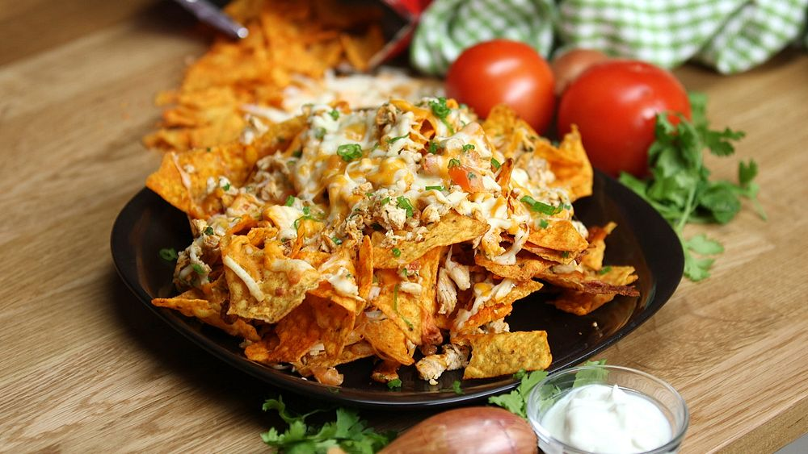

Chicken Nachos

Home
Description
Chicken Nachos is everything you know and love about nachos, made with juicy shredded Mexican CHICKEN!
With mandatory melted cheese,
quick guac and a dollop of sour cream, this nachos recipe is weekend
worthy yet easy enough for dinner midweek.
The key flavors are in the chicken topping, which also makes a great filling for tacos
and quesadillas.
Ingredients
Nachos
- 250g / 8 oz tortilla or plain corn chips
- Shredded chicken for nachos (recipe provided below)
- 250g / 8 oz (2.5 cups) shredded cheddar or Monterey Jack cheese
- Guacamole (recipe provided below)
- Toppings: Sour cream, Coriander / cilantro leaves, Jalapeno
Chicken for Nachos
- 700 g / 1.2 lb chicken thighs or breast, skinless and boneless
- 1.5 tbsp olive oil
- 2 tbsp tomato paste
- 2 tsp sugar
- 1 cup (250ml) chicken broth, separated (liquid stock)
Nachos Meat Seasoning
- 3 tbsp lime juice
- 1 tbsp olive oil
- 2 garlic cloves, minced
- 2 tsp EACH garlic powder, onion powder, dried oregano
- 3 tsp EACH cumin powder, paprika
- 1/2 tsp cayenne pepper
- 1/2 tsp EACH salt and pepper
Guacamole
- 2 medium avocados
- 3 tbsp roughly chopped coriander/cilantro
- 2 tbsp lime juice
Steps
Chicken for Nachos
- Place Nachos Seasoning ingredients in a bowl. Add 2 tbsp of the chicken broth and
mix to form a loose paste.
- Add chicken, turn to coat in paste.
- Heat oil in a large skillet over medium high heat. Cook chicken for 3 minutes on
each side (reserve paste left in bowl).
Remove chicken into a shallow dish.
- Return skillet to stove. Add remaining chicken broth, tomato paste, sugar and scrape
in any paste left in the bowl.
Mix to dissolve, scraping base of pan, and
bring to simmer.
- Meanwhile, shred chicken with forks, or chop (do not worry if raw inside).
- Return chicken into sauce, toss and simmer for 3 minutes until sauce reduces down
to a thick sauce.
Adjust salt to taste. Keep warm.
Guacamole
- Place ingredients in a bowl. Use potato masher to mash to desired consistency.
Adjust salt and pepper to taste.
Nachos
- Preheat oven to 180C/350F.
- Place half the corn chips slightly overlapping on a tray. Top with half
the (warm) chicken and cheese.
- Top with remaining chips and cheese. Bake 7 minutes or until cheese is
melted and bubbly.
- Garnish with coriander/cilantro and jalapeño. Serve immaterial with quick
Guacamole and sour cream.